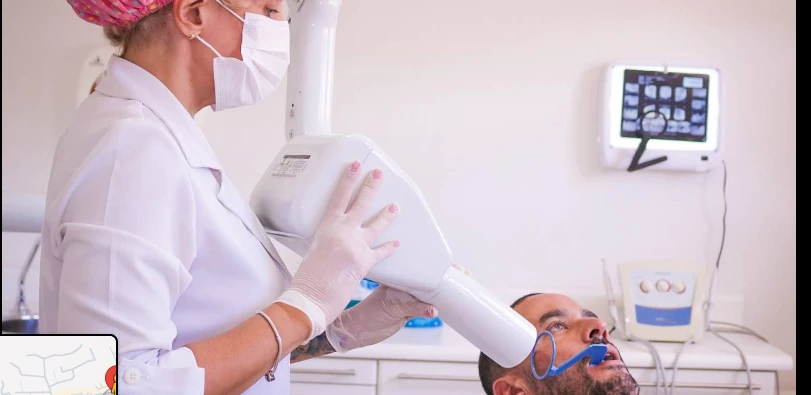
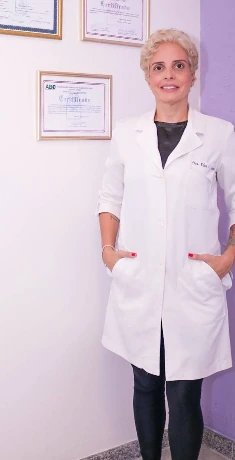
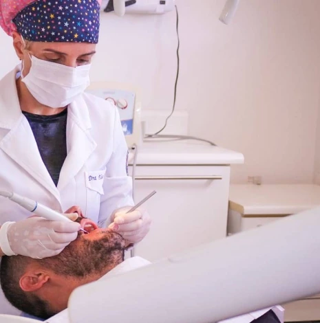
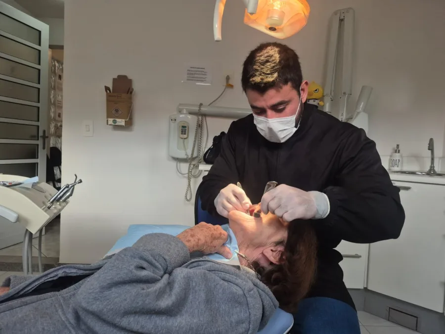
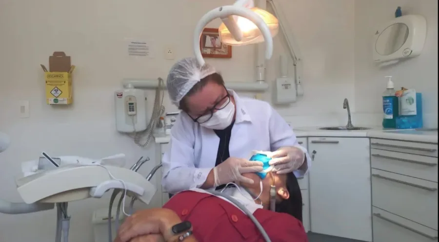
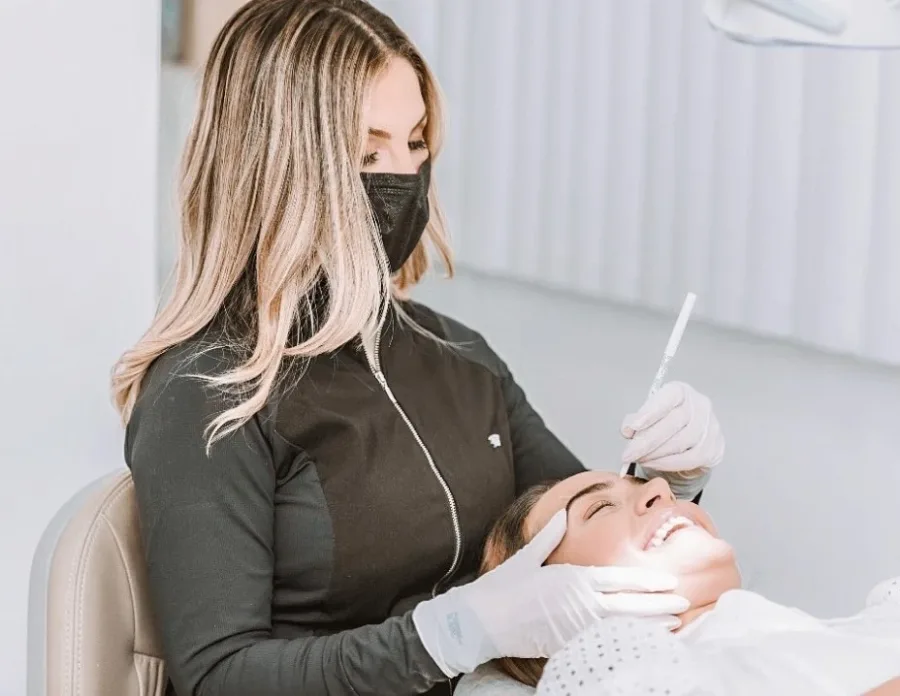
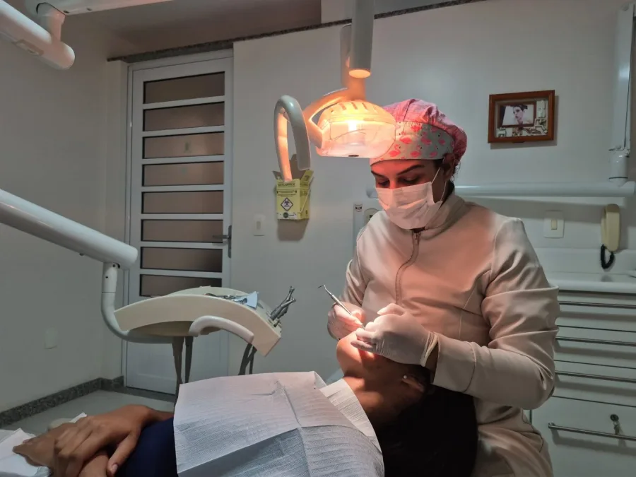
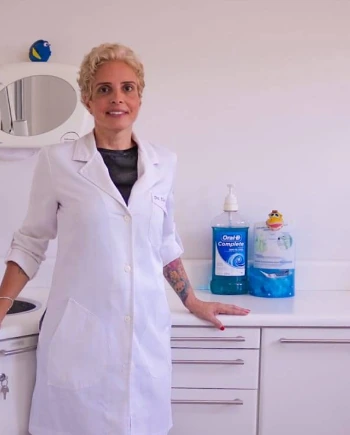
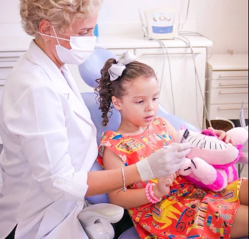
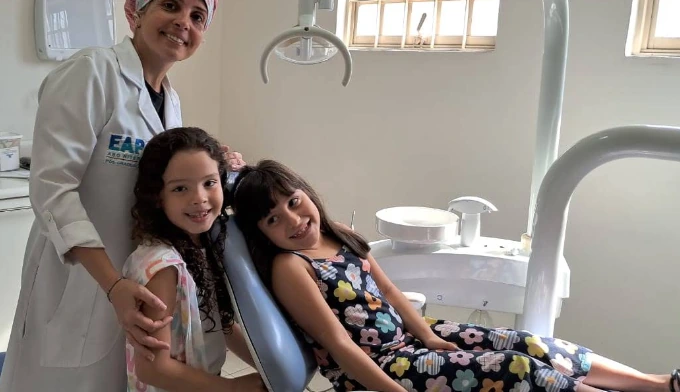

Clínica geral
Acompanhamento e cuidados odontológicos.
Clínica geral e prótese com a Dra. Elisa, e uma equipe de especialistas para o seu tratamento completo. Fale diretamente pelo WhatsApp para agendar sua consulta.
Estr. Francisco da Cruz Nunes, 7658 · Sala 201


Conheça as áreas apresentadas pela Dra. Elisa e fale sobre o atendimento que procura.
Acompanhamento e cuidados odontológicos.
Uma avaliação individual das possibilidades para você.
Atendimento na área de tratamento de canal.
Orientação sobre tratamentos com prótese.
A Dra. Elisa Cerqueira trabalha com excelência e profissionalismo há mais de 20 anos como cirurgiã-dentista. É especialista em Endodontia pela UFF e em Prótese Dentária pela ABO.
Além disso, o consultório oferece todas as especialidades através de uma equipe de profissionais especialistas, altamente qualificados na sua área de atuação.
Assim, você pode contar com um tratamento multidisciplinar, em um consultório bem localizado, onde o foco é a sua saúde bucal, estética e bem-estar.

Registro real do consultórioAlém da Dra. Elisa, profissionais especialistas e de confiança atendem no consultório. Assim, cada etapa do seu tratamento fica com quem é referência naquela área.




Fotografias reais da Dra. Elisa e do consultório em Itaipu.


Registros compartilhados do consultório mostram a relação próxima com quem passa por lá.

24 avaliações no Google
Ver perfil no Google“Excelente profissional e bons preços.”
Avaliação publicada no Google
“Ótimo trabalho, super atenciosa e preço justo.”
Avaliação publicada no Google
“Fiz meu tratamento de canal. Clareamento entre outras coisas.”
Avaliação publicada no Google
Respostas rápidas sobre os tratamentos mais procurados. Ficou alguma dúvida? Fale com a gente pelo WhatsApp.
A prótese repõe dentes perdidos ou muito danificados, devolvendo a função de mastigar e falar, a estética do sorriso e o equilíbrio da boca. Existem vários tipos, como coroas, pontes, próteses removíveis, dentaduras e próteses sobre implante. Na avaliação, a Dra. Elisa indica a opção mais adequada para o seu caso.
Quando a inflamação da gengiva (gengivite) evolui para a doença periodontal, que atinge os tecidos que sustentam os dentes. Sinais como sangramento, gengiva retraída, mau hálito persistente ou dentes com mobilidade merecem atenção. Sem controle, a doença pode levar à perda dos dentes, por isso o acompanhamento com especialista é importante.
É o tratamento feito pela endodontia quando a parte interna do dente (a polpa) está inflamada ou infeccionada. O canal é limpo e selado, o que alivia a dor e permite preservar o dente em vez de extraí-lo.
Nem todo siso precisa sair. A extração costuma ser indicada quando ele não tem espaço para nascer, nasce torto, causa dor, inflamação ou prejudica os dentes vizinhos. A avaliação com exame de imagem mostra se é o seu caso.
É o cuidado do dia a dia com a saúde bucal: consultas de avaliação, limpeza, restaurações, algumas extrações e orientações de prevenção. Quando o caso pede um tratamento especializado, você é encaminhado para o profissional da equipe dentro do próprio consultório.
Chame pelo WhatsApp e combine seu atendimento com a Dra. Elisa em Itaipu.
Agendar pelo WhatsAppEstr. Francisco da Cruz Nunes, 7658
Sala 201 · Itaipu, Niterói · RJ
CEP 24320-330
Estrada Francisco da Cruz Nunes, 7658 · Sala 201 · Itaipu, Niterói